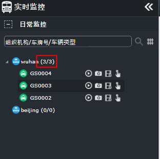

车辆在线统计
实时更新统计车辆的在线/离线情况。
| • | 运营车辆在线数/总数统计： 在导航控制栏显著位置显示运营车辆总数、在线百分比，例如数字“9”表示当前运营车辆总数为9辆，数字“11%”表示当前在线的运营车辆在运营车辆总数中的百分占比。
Fig 21 日常监控主界面 |
| • | 按组织机构统计车辆在线数/总数： 在日常监控主界面导航菜单栏，打开组织机构树形结构，选择组织机构节点，显示所选组织机构运营车辆在线数/总数，如下图所示。

Fig 22 按组织机构统计车辆在线数/总数
|